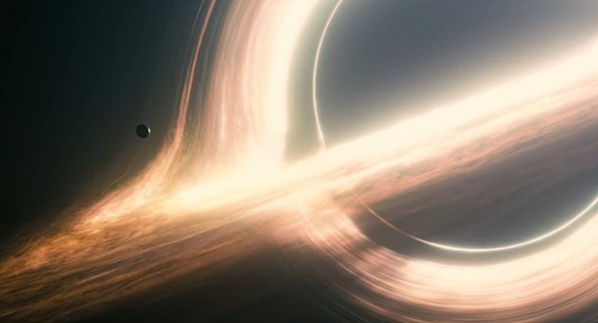
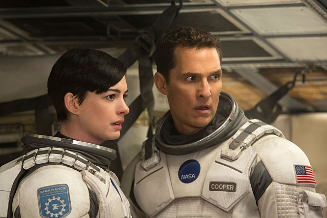
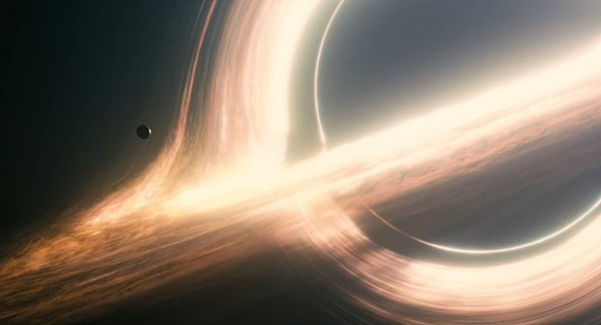
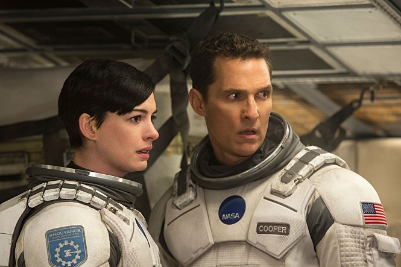
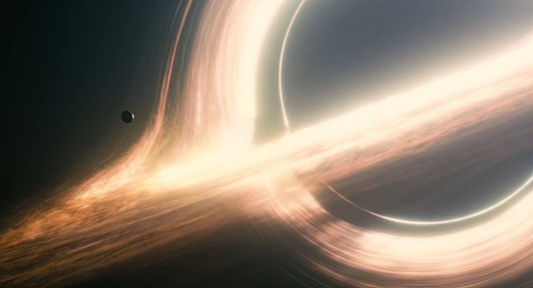
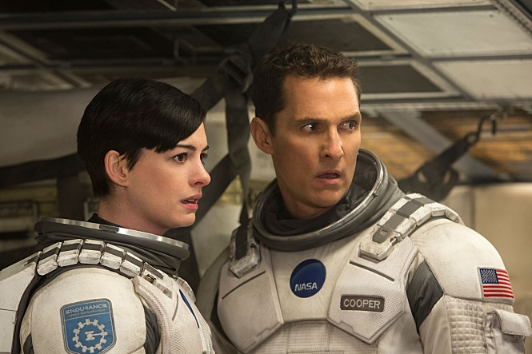

감독: 크리스토퍼 놀란
출연진: 매튜 맥커너히, 앤 해서웨이, 마이클 케인, 제시카 차스테인, 케이시 애플렉
장르: SF
개봉일: 2014년 11월 6일 (대한민국)
 
줄거리: 세계 각국의 정부와 경제가 완전히 붕괴된 미래가 다가온다. 지난 20세기에 범한 잘못이 전 세계적인 식량 부족을 불러왔고, NASA도 해체되었다. 이때 시공간에 불가사의한 틈이 열리고, 남은 자들에게는 이 곳을 탐험해 인류를 구해야 하는 임무가 지워진다. 사랑하는 가족들을 뒤로 한 채 인류라는 더 큰 가족을 위해, 그들은 이제 희망을 찾아 우주로 간다. 그리고 우린 답을 찾을 것이다. 늘 그랬듯이…
  
 